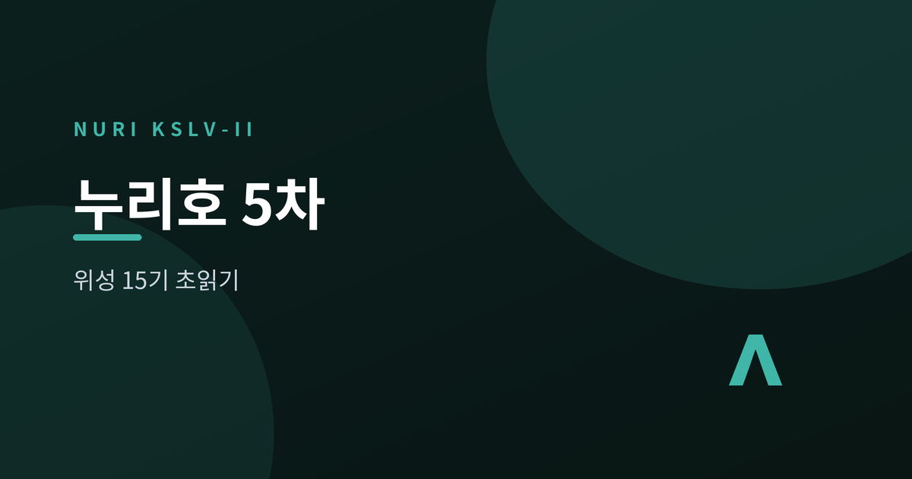
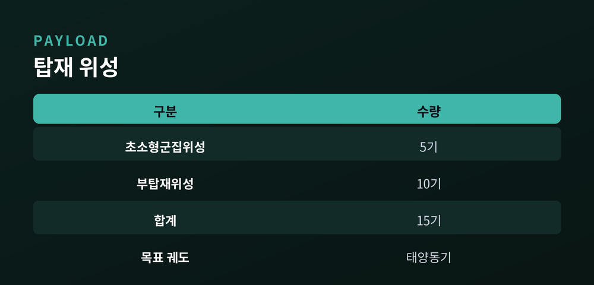
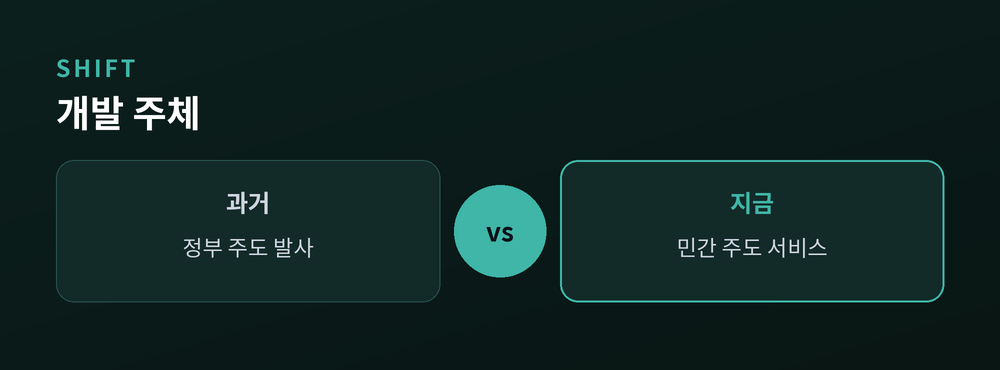
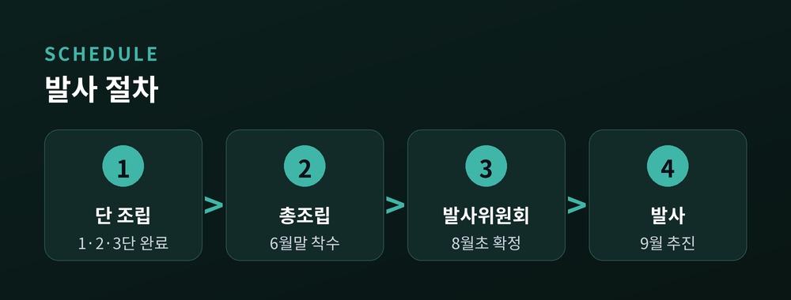
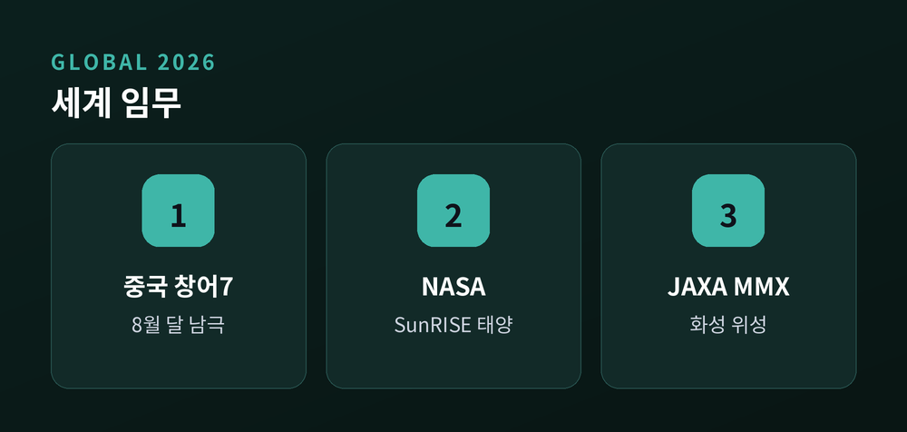

위성 15기 싣고 민간 우주경제의 문을 연다

한국형 발사체 누리호(KSLV-II)의 다섯 번째 비행이 다가오고 있습니다. 우주항공청(KASA)은 올해 3분기, 이르면 9월 발사를 목표로 준비 중입니다. 이번 임무는 단순한 재도전이 아닙니다. 국내 우주산업이 민간 주도 체제로 넘어가는 첫 본격 사이클의 신호탄입니다.
이번 5차 발사의 핵심은 '한 번에 여럿'입니다. KAIST 인공위성연구소가 개발한 초소형군집위성 5기(2~6호)와 국내 산업체·대학·지자체가 만든 부탑재위성 10기 등, 총 15기가 함께 태양동기궤도로 향할 예정입니다. 초소형군집위성은 여러 기를 무리 지어 운용해 같은 지역을 더 자주 촬영하는 방식으로 알려졌습니다. 관측 주기를 줄이는 차세대 운용 개념이 실전에 오르는 셈입니다.

발사가 주목받는 진짜 이유는 그 다음에 있습니다. 누리호의 체계종합은 한화에어로스페이스로 이관됐고, 정부는 반복발사를 위한 통합계약을 추진하고 있습니다. 발사를 국가가 도맡던 시대에서, 기업이 발사 서비스를 책임지는 구조로 옮겨가는 과정입니다.
"성공적인 4차 발사에 이어, 이제 민간이 우주개발의 주역으로 서는 단계입니다."
예산도 이를 뒷받침합니다. KASA의 2026년 예산은 1조 1,201억 원으로 전년 대비 16.1% 늘었고, 이 가운데 연구개발(R&D)에 9,495억 원이 배정됐습니다. 민간 산업 생태계 조성에도 별도 재원이 편성됐습니다. 다만 아직 발사 단가·주기는 검증 단계여서, 진정한 '경제성'은 반복 발사의 성패에 달려 있습니다.

6월 말 기준 1·2·3단의 단별 조립이 끝나고, 이들을 하나로 합치는 총조립 단계에 들어간 것으로 전해졌습니다. 남은 절차는 명확합니다. 총조립을 마치고, 8월 초 발사관리위원회에서 정확한 발사일을 확정한 뒤, 9월 발사를 추진한다는 계획입니다. 물론 기상과 기술 점검에 따라 일정은 조정될 수 있습니다.

한국만 움직이는 것은 아닙니다. 2026년은 세계적으로 우주탐사의 분수령입니다. 중국은 8월 창어 7호를 쏘아 달 남극의 물 얼음을 탐사할 예정이고, 미국 NASA는 여름 큐브샛 6기로 구성된 SunRISE로 태양 전파 폭발을 관측합니다. 일본 JAXA는 화성 위성 포보스에서 사상 첫 표면 시료 채취를 노리는 MMX 발사를 준비 중입니다. 누리호 5차는 이 거대한 흐름 속에서, 한국이 2029년 달 통신궤도선을 향해 내딛는 디딤돌입니다.

정리하면, 누리호 5차 발사는 '위성을 올리는 일'을 넘어 우주개발의 주체가 바뀌는 전환점입니다. 성과는 분명하지만, 반복 발사의 경제성과 안정성이라는 과제도 함께 남아 있습니다. 카운트다운은 이미 시작됐습니다. 9월, 고흥의 하늘을 다시 올려다볼 이유가 여기 있습니다.
참고 소스